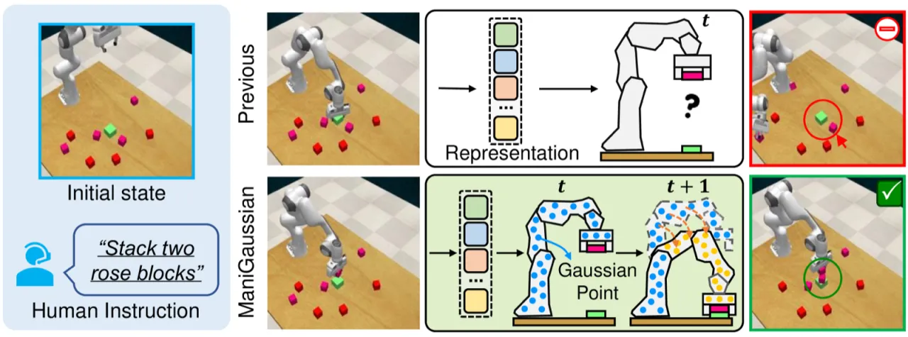
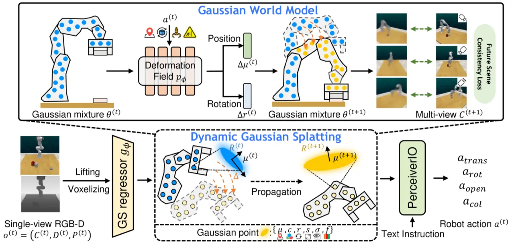
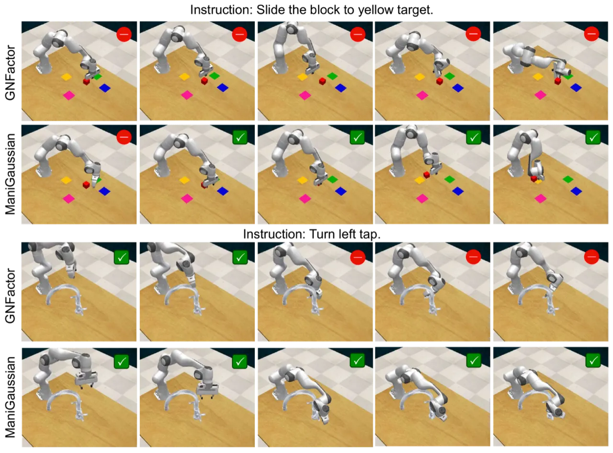
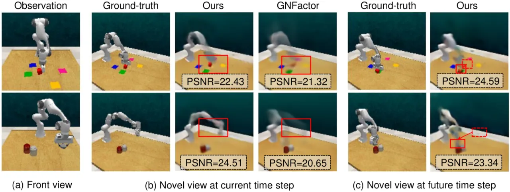
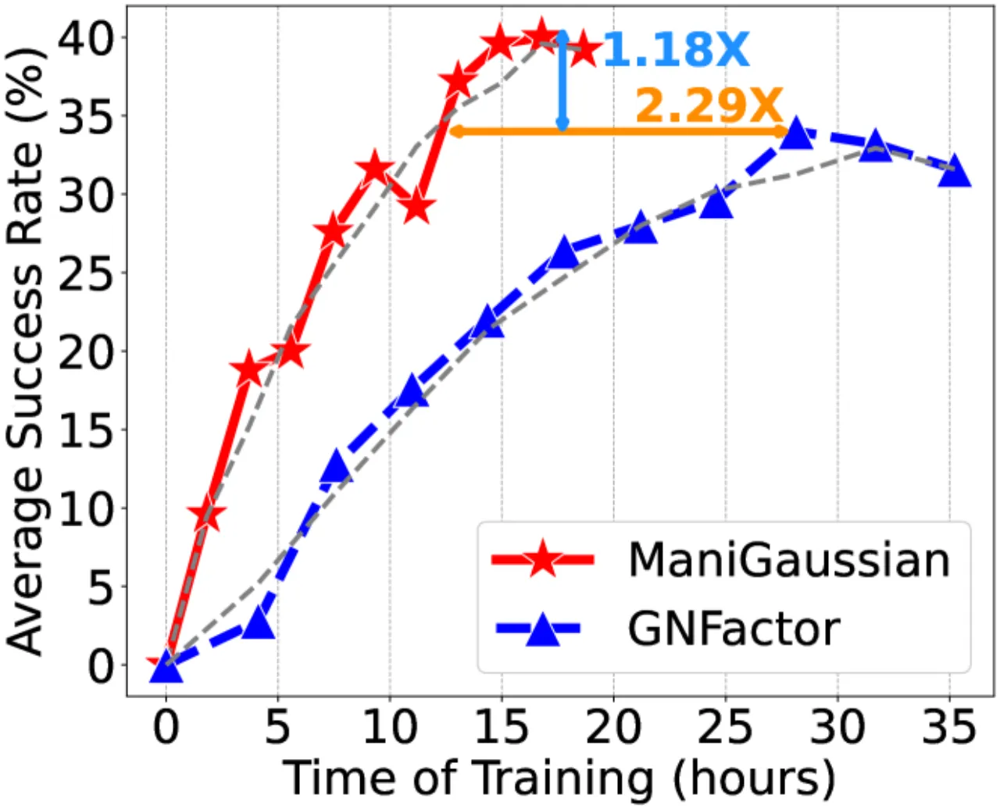

ManiGaussian 将 3D Gaussian Splatting 扩展到动态时序场景，构建 Gaussian 世界模型来预测未来场景状态，以此为监督信号引导机器人理解物体交互动态，从而大幅提升语言条件下的多任务操控能力。在 RLBench 10 个任务的评测中，ManiGaussian 以 44.8% 的平均成功率超越 SOTA GNFactor 13.1 个百分点。
语言条件机器人操控任务需要在非结构化环境中完成复杂的物体交互。现有的感知类方法（perceptive methods）提取语义特征做动作预测，而生成类方法（generative methods）通过自监督重建 3D 场景来辅助学习——但两类方法都忽略了一个关键因素。
"Conventional robotic manipulation methods...ignore the scene-level spatiotemporal dynamics that depict the physical interaction among objects during manipulation."
机器人在推、抓、拧、滑等任务中，物体之间存在时序上的因果依赖：夹爪移动如何引发物体位移？下一帧场景会如何变化？若模型无法建模这种时空动态，就难以在 long-horizon 或需要多步推理的任务中保持稳定。ManiGaussian 的核心思路是：以「预测未来场景」作为额外监督信号，迫使模型内化场景动态。

ManiGaussian 由两个核心模块组成：（1）动态 Gaussian Splatting 框架——将语义特征传播建模在 Gaussian 嵌入空间中；（2）Gaussian 世界模型——基于当前观测和动作预测未来场景，为策略学习提供监督信号。

标准 3DGS 用静态 Gaussian 基元表示场景，参数 θᵢ = (μᵢ, cᵢ, rᵢ, sᵢ, σᵢ, fᵢ) 包含位置、颜色、旋转、尺度、不透明度和语义特征。ManiGaussian 将其扩展为时间相关形式：
θᵢ⁽ᵗ⁾ = (μᵢ⁽ᵗ⁾, cᵢ⁽ᵗ⁾, rᵢ⁽ᵗ⁾, sᵢ⁽ᵗ⁾, σᵢ⁽ᵗ⁾, fᵢ⁽ᵗ⁾)
针对刚体操控任务，位置和旋转随时间变化：μᵢ⁽ᵗ⁺¹⁾ = μᵢ⁽ᵗ⁾ + Δμᵢ⁽ᵗ⁾，而颜色、尺度、不透明度和语义特征保持不变。这样，变形预测器只需预测 Δμ 和 Δr，大大降低了建模难度。
世界模型由四个子模块串联构成：
训练包含 3,000 次迭代的热身阶段（warm-up），期间冻结变形预测器，先建立稳定的几何表征，再加入动态建模。
总损失由四项组成：
ℒ = ℒ_Act + λ_Geo · ℒ_Geo + λ_Sem · ℒ_Sem + λ_Dyna · ℒ_Dyna
在 RLBench 基准的 10 个任务、166 个变体上进行评测，每个任务提供 20 个专家演示。使用单前置摄像头（128×128 分辨率）做推理，20 路多视角摄像头作为 Gaussian Splatting 的训练监督。基线包括 PerAct（感知类）、PerAct(4cam)（4 摄像头版本）和 GNFactor（生成类）。
| 任务 Task | PerAct | PerAct(4cam) | GNFactor | ManiGaussian |
|---|---|---|---|---|
| close jar | 18.7 | 21.3 | 25.3 | 28.0 |
| open drawer | 54.7 | 44.0 | 76.0 | 76.0 |
| sweep to dustpan | 0.0 | 0.0 | 28.0 | 64.0 |
| meat off grill | 40.0 | 65.3 | 57.3 | 60.0 |
| turn tap | 38.7 | 46.7 | 50.7 | 56.0 |
| slide block | 18.7 | 16.0 | 20.0 | 24.0 |
| put in drawer | 2.7 | 6.7 | 0.0 | 16.0 |
| drag stick | 5.3 | 12.0 | 37.3 | 92.0 |
| push buttons | 18.7 | 9.3 | 18.7 | 20.0 |
| stack blocks | 6.7 | 5.3 | 4.0 | 12.0 |
| Average | 20.4 | 22.7 | 31.7 | 44.8 |
注：meat off grill 任务中 PerAct(4cam) 以 65.3% 优于 ManiGaussian 的 60.0%，open drawer 中两者并列最优（76.0%）。其余 8 个任务 ManiGaussian 均为最优。


| Geo | Sem | Dyna | Planning | Long-horizon | Tools | Motion | Screw | Occlusion | Average |
|---|---|---|---|---|---|---|---|---|---|
| ✗ | ✗ | ✗ | 36.0 | 2.0 | 25.3 | 52.0 | 4.0 | 28.0 | 23.6 |
| ✓ | ✗ | ✗ | 46.0 | 4.0 | 52.0 | 52.0 | 24.0 | 60.0 | 39.2 |
| ✓ | ✓ | ✗ | 46.0 | 8.0 | 53.3 | 64.0 | 28.0 | 56.0 | 41.6 |
| ✓ | ✗ | ✓ | 54.0 | 10.0 | 49.3 | 64.0 | 24.0 | 72.0 | 43.6 |
| ✓ | ✓ | ✓ | 40.0 | 14.0 | 60.0 | 56.0 | 28.0 | 76.0 | 44.8 |
消融分析显示：几何重建（Geo）带来最显著的提升（23.6% → 39.2%，+15.6%），说明 3D 几何理解是操控成功的基础；动态预测（Dyna）在 long-horizon 和 occlusion 类任务上效果最突出；三者协同使用达到最优的 44.8%。

论文明确指出："The limitations stem from the necessity of multiple view supervision with camera calibration for the Gaussian Splatting framework." 训练时需要 20 路多视角摄像头及其内外参数，在现实部署场景中（如单目移动机器人）代价较高，限制了方法的实用性。
当前的动态建模仅对刚体物体进行位置和旋转的变形预测，不支持柔性物体（如绳子、布料）或流体的形变。对于高度非刚性的操控任务，方法可能需要扩展。
ManiGaussian 预测 t→t+1 的未来场景作为监督信号，但对于需要多步规划的 long-horizon 任务（如 "stack blocks" 仅达 12.0%），单步世界模型的预测范围可能不足以充分约束策略。
训练使用 128×128 分辨率图像，推理仅依赖单一前置摄像头。当场景中存在大量细粒度操控对象时，低分辨率可能导致感知精度下降。此外，Gaussian Splatting 的渲染开销在实时部署中尚待优化。